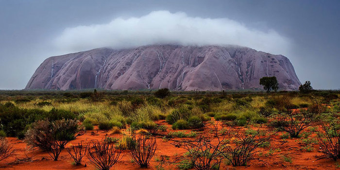

Australia
 |
 |
ทวีปออสเตรเลียมีลักษณะภูมิประเทศโดยทั่วไปร้อยละ 65 เป็นที่ราบสูง และตั้งอยู่ทางทิศตะวันตก พื้นที่ส่วนใหญ่เป็นทะเลทรายที่แห้งแล้งและทุรกันดาร และมีขนาดทะเลทรายรวมกันใหญ่เป็นอันดับ 2 ของโลกรองจากทะเลทรายสะฮาราในทวีปแอฟริกา ชาวออสเตรเลียเรียกดินแดนที่แห้งแล้งและทุรกันดารนี้ว่า “เอาต์แบ็ก” ประชากรออสเตรเลียส่วนใหญ่อาศัยอยู่ในบริเวณชายฝั่งด้านตะวันออกหลังเทือกเขาเกรตดิไวดิง ซึ่งแบ่งแยกชายฝั่งตะวันออกกับเขตเอาต์แบ็ก มีแม่น้ำสายสำคัญ ๆ อยู่ทางภูมิภาคตะวันออก ได้แก่ แม่น้ำดาร์ลิง แม่น้ำเมอร์เรย์ ส่วนตอนกลางของประเทศที่เรียกว่า “เขตเซนทรัลโลว์แลนด์” เป็นเขตแห้งแล้งที่สุด แม่น้ำลำธารต่าง ๆ อาจแห้งสนิทเป็นเวลาหลายปี